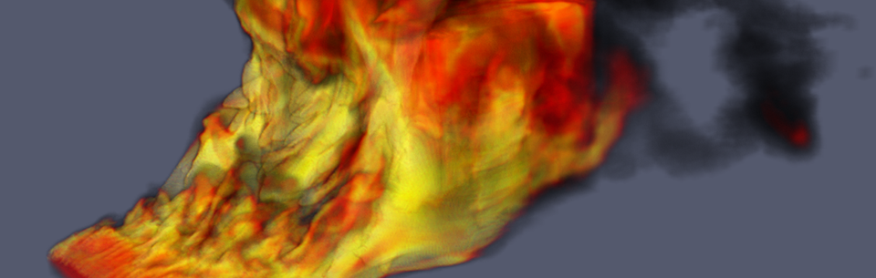

Kenneth Moreland



Welcome to my home page, where you will find a list of my current and past activities. I am currently a Principal Member of Technical Staff at Sandia National Laboratories. I received my Ph.D. in Computer Science from the University of New Mexico in 2004. I've been working since 2000 at Sandia's Scalable Analysis and Visualization department, which is part of Sandia's Center for Computing Research. During that time I have focused on research and development with large-scale visualization.
This page contains posts of most of my professional technical work. Use the menu to view my projects, research, and publications. I also occasionally make blog posts that are less formal but usually technically relevant.
SAND 2015-4836 W